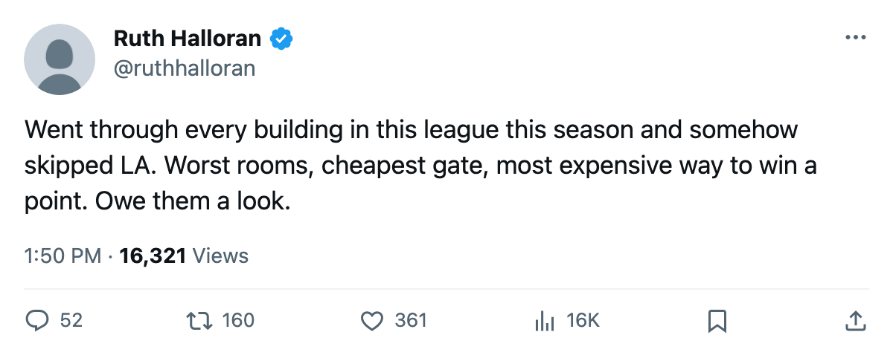
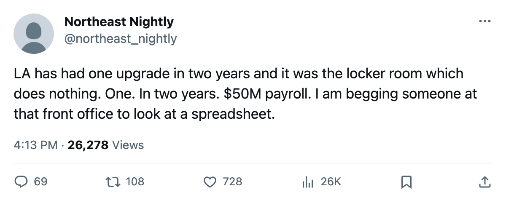

LA Has the Worst Building in the League, the Lowest Revenue, and Nobody Here Has Looked at Them
Four rooms at −19, a gate that brings in $41.13M, and $2.31M a point from a payroll that cannot buy 23 wins
 Ruth HalloranBusiness of hockey · The Building
Ruth HalloranBusiness of hockey · The Building Los Angeles Kings runs the worst facility package in this league and generates the least revenue of any club. The Kings' four tracks that move a rating sum to −19 on the tuning table, three points below the next-worst club. Season revenue sits at $41.13M, the lowest of 30 buildings. No one at this desk has looked at them before.
Los Angeles Kings runs the worst facility package in this league and generates the least revenue of any club. The Kings' four tracks that move a rating sum to −19 on the tuning table, three points below the next-worst club. Season revenue sits at $41.13M, the lowest of 30 buildings. No one at this desk has looked at them before.
LA is paying $50.80M in payroll for 22 points through 31 games, the fewest points in the league. That works out to $2.31M a point, second-worst behind Washington at $2.48M. The Kings sit 6-17-6 in the Pacific Division and carry the worst away record in 30 clubs at 2-16.
Two rooms at the floor, a road penalty of 6
Equipment sits at 1, workout at 0, practice at 1, travel at 0. Level 5 is par and reads zero. Workout and travel are at the absolute floor. Equipment and practice are one level above it. The on-the-ice penalty across LA's roster reads −2.61, tied with Detroit and Columbus, but the total across all four live tracks is the heaviest in the league.
The practice rink costs LA 4 attributes at home. Travel costs 6 on the road. Five other clubs also sit at travel level 0 and carry the same 6-attribute penalty away from home: Detroit, Montreal, Atlanta, Washington, Phoenix. None of them have lost 16 games on the road. Detroit is 5-9 away. Washington is 5-15. LA is 2-16, and the travel penalty alone does not account for it, but it makes every road trip harder than the one before it.
The gate: $80 and 13,223
A ticket in Los Angeles costs $80, one of seven clubs at that price. Average attendance is 13,223, second-lowest in the league behind Phoenix's 11,558. Season revenue is $41.13M, the smallest figure in 30 clubs. Profit is $14.35M. GM Hames McKenna carries a prestige standing of 562, the second-lowest in the league behind Florida's Boris Van Ryswyk. The Kings' last playoff run reads 0.
One upgrade since May, and it reads nothing
The upgrade record reaches back to December 2004. LA raised exactly one track: a locker room, one level, in May 2005. The locker room carries a curve in the tuning file that nothing in this pipeline reads, so the change did nothing the record can show. No club has moved less.
Four clubs have raised visible tracks since December 1. Montreal moved its workout room and its equipment room. Colorado and Nashville moved scouting rooms, which feed a trade valuation nobody outside a club can see. LA has raised no track, visible or otherwise.
Kerry Morassutti of  Colorado Avalanche told The Tunnel's Jan Kowalczyk about his own building's gaps this week: "The workout room. That's the practice room. I'd love to get both to three tonight. I can't. The payroll won't let me." Colorado's payroll is $66.38M. LA's is $50.80M. LA's workout room sits at 0, the same as Colorado's. Its practice rink is one level above Colorado's. Colorado at least raised its scouting room in early December. LA raised nothing.
Colorado Avalanche told The Tunnel's Jan Kowalczyk about his own building's gaps this week: "The workout room. That's the practice room. I'd love to get both to three tonight. I can't. The payroll won't let me." Colorado's payroll is $66.38M. LA's is $50.80M. LA's workout room sits at 0, the same as Colorado's. Its practice rink is one level above Colorado's. Colorado at least raised its scouting room in early December. LA raised nothing.
A point in Los Angeles costs $2.31M, bought from the worst building in this league.

